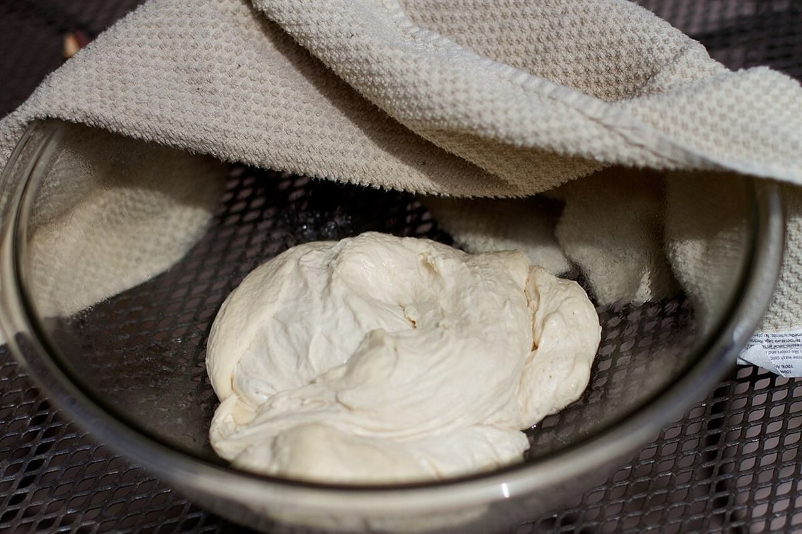
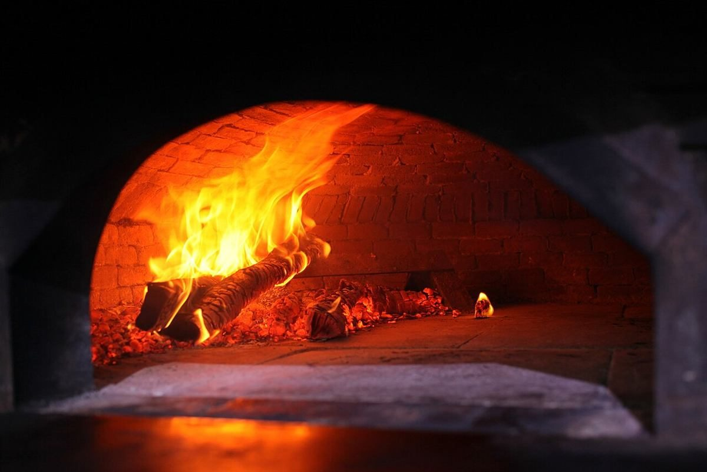

店のこと
六つの部位の読みかた
番号は図の番号と同じです。制作側の連想で、お店の理念・由来とは無関係です。
- 1ふた本体の上にかぶせる、鍋の口を閉じる部分。
- 2圧力調整弁ふたの上にある、内部の圧を逃がしたり保ったりする部分。
- 3操作パネル本体の前面にある、ボタンや表示をまとめた部分。
- 4内鍋本体におさまる、食材を入れる取り外せる鍋。
- 5シリコンパッキンふたの縁にはめる、すき間をふさぐリング。
- 6ヒーター本体の底にある、内鍋を下から温める部分。
ギャラリー(イメージ)
断面の写真


写真はパンやコーヒー豆などのイメージです。お店のものではなく、お店で提供している商品を示すものでもありません。
写真帯(イメージ)



写真はパンやコーヒー豆などのイメージです。お店のものではなく、お店で提供している商品を示すものでもありません。
お店について
確認できていること
所在地とInstagramのみ確認できています。営業時間・メニュー・価格などは準備中です。
| 所在地 | 〒669-4253 兵庫県丹波市春日町柚津67-1 |
|---|---|
| 電話 | 準備中 |
| 営業時間 | 準備中 |
| 定休日 | 準備中 |
| ご予約 | 準備中 |
| 駐車場 | 準備中 |
| SNS | Instagram @yamane.bakery |